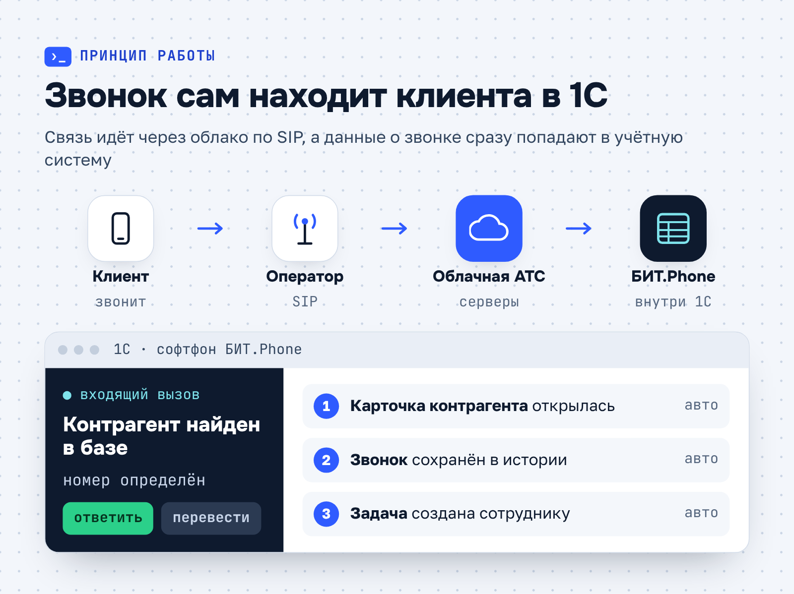
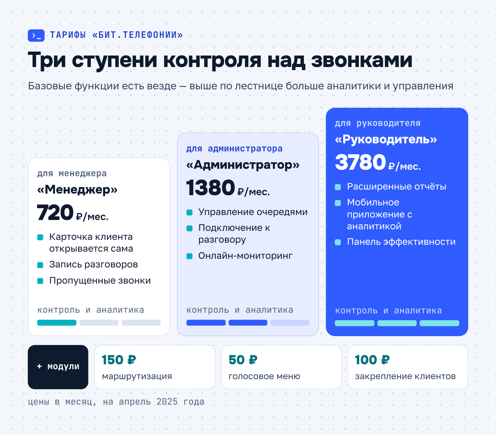
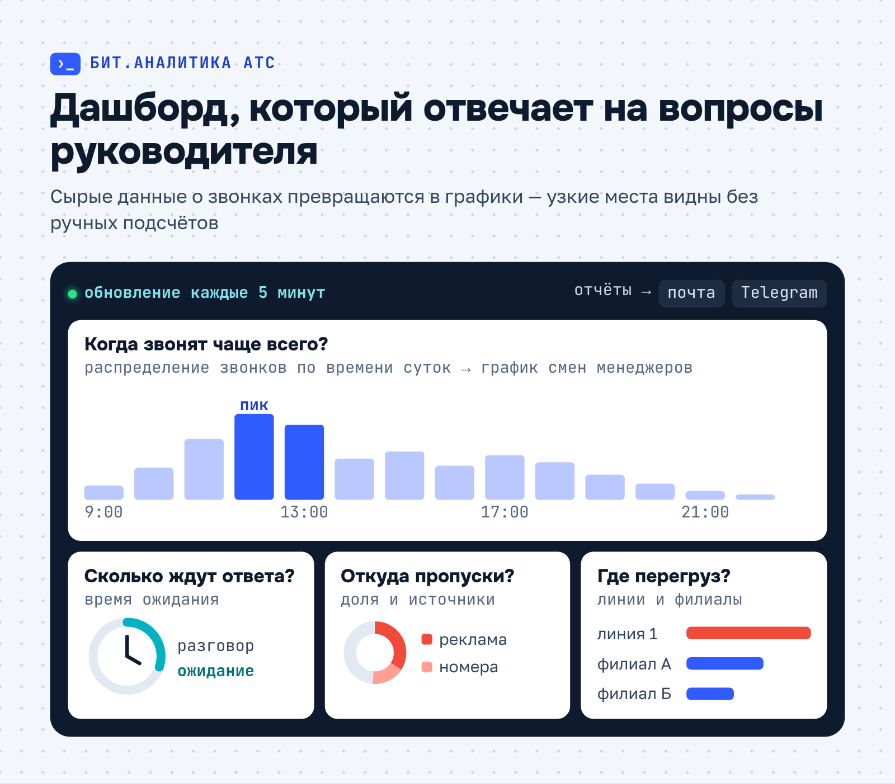
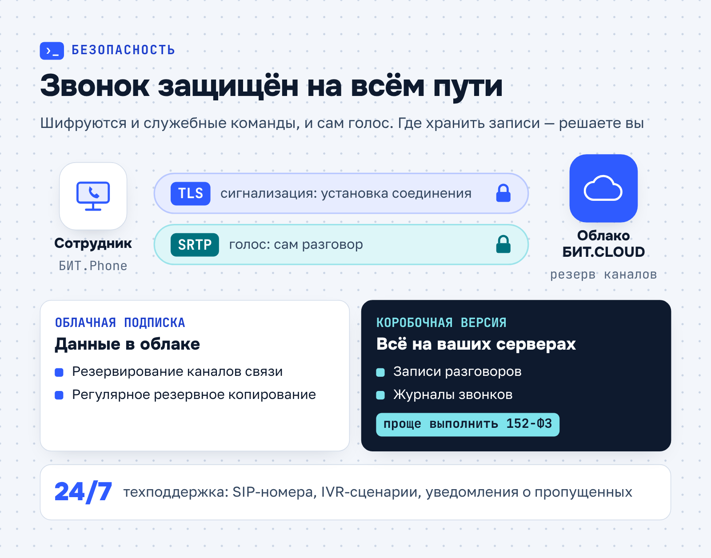

БИТ.CLOUD · Продуктовая статья · телефония
Продуктовая статья БИТ.CLOUD о том, как работает виртуальная АТС
БИТ.CLOUD1bitcloud.ru
БИТ.CLOUD — облачный сервис компании «Первый Бит», партнёра 1С: аренда и хостинг 1С, виртуальные серверы, ИТ-аутсорсинг 24/7, информационная безопасность и Яндекс 360. На рынке ИТ-услуг с 2006 года, более 16 000 пользователей, данные хранятся в российских ЦОД уровня Tier III.
- Площадка
- Блог 1bitcloud.ru
- Формат
- SEO-статья в блог
- Год
- 2025
Уже 4,5 года пишу для блога БИТ.CLOUD — облачного сервиса «Первого Бита»: 1С в облаке, виртуальные серверы, ИТ-аутсорсинг и защита данных. Заказчику нужны трафик по коммерческим кластерам и заявки на услуги. За это время вышло около 160 статей: инструкции, экспертные разборы по ИБ, продуктовые обзоры и дописки к опубликованным материалам.
Задача
Объяснить руководителям продаж и сервиса, как работает облачная телефония, на примере «БИТ.Телефонии». Статья закрывает интент на этапе выбора решения: снимает возражения о номерах, CRM и RDP и ведёт к бесплатному аудиту телефонии.
Решение
Собрала продуктовую статью от механики к выбору: путь звонка по SIP до карточки клиента в 1С, таблица «облако или коробка», лестница тарифов с ценами, метрики аналитики и пять шагов внедрения. FAQ построила на реальных возражениях клиентов.
Результат
Статья работает как гид по продукту, и менеджеры БИТ.CLOUD отправляют её клиентам перед демо. На странице четыре инфографики, FAQ и лид-магнит, чек-лист аудита из 64 критериев; со страницы приходят заявки на демо-доступ.
Как работает виртуальная АТС
Виртуальная АТС — облачное решение, которое заменяет традиционную офисную телефонную станцию. Она объединяет голосовую связь с цифровыми инструментами для продаж и сервиса, и для неё не нужно физическое оборудование. Разбираем, как устроена технология, что умеет «БИТ.Телефония» и где она пригодится — от небольшого офиса до сети филиалов.
Принцип работы облачной телефонии
«БИТ.Телефония» подключается к IP-АТС по протоколу SIP — стандарту, который обеспечивает стабильную связь и совместимость с операторами. Звонки проходят через облачные серверы, а данные синхронизируются с 1С и другими системами. Например, при входящем вызове система сама открывает карточку контрагента в 1С, сохраняет звонок в истории и создаёт задачу для сотрудника.

Основа платформы — софтфон «БИТ.Phone», встроенный в интерфейс 1С. Он превращает учётную программу в коммуникационный центр: менеджер звонит в один клик, а система сама определяет номер клиента и находит его в базе. Говорить можно через гарнитуру или стационарный телефон.
Что это даёт бизнесу
Компания экономит на физических АТС и их обслуживании, а процессы становятся прозрачнее. Платформа объединяет филиалы в единую сеть, а аналитика в реальном времени помогает распределять нагрузку между операторами: руководитель видит статусы сотрудников и в пиковые часы перенаправляет вызовы тем, кто свободен.
Систему можно масштабировать без ограничений по числу номеров, сотрудников и филиалов. Например, розничная сеть подключает новые точки к единой АТС и управляет звонками централизованно.
Облако или коробка
«БИТ.Телефонию» можно подключить как облачную подписку или купить коробочную версию для установки на собственные серверы. Форматы различаются оплатой, обновлениями и тем, где хранятся данные:
| Облачная подписка | Коробочная версия | |
|---|---|---|
| Оплата | Ежемесячно; при оплате за 6 месяцев — скидка 5%, за 12 месяцев — 10% | Единоразово за лицензию, без обязательной абонентской платы |
| Обновления и поддержка | Автоматические обновления, техподдержка 24/7 | Оплачиваются отдельно, по желанию |
| Инфраструктура | Резервная инфраструктура БИТ.CLOUD | Собственные серверы компании |
| Зависимость от интернета | Нужен стабильный канал | Работает без внешнего канала |
| Хранение данных | В облаке, с шифрованием | Полностью локально, включая записи разговоров |
Для корпоративных клиентов доступны и гибридные схемы: часть функций работает в облаке, а критичные модули, например аналитика, размещаются на локальных серверах.
Тарифы: что входит в каждый
Каждый тариф рассчитан на свою роль в компании. Базовый функционал есть во всех, а различаются глубина аналитики и уровень контроля (цены — на апрель 2025 года):
- «Менеджер», 720 ₽/мес. — автоматическое открытие карточки клиента, запись разговоров, отображение пропущенных звонков.
- «Администратор», 1380 ₽/мес. — управление очередями, подключение к разговору в режиме прослушивания, онлайн-мониторинг.
- «Руководитель», 3780 ₽/мес. — расширенные отчёты, мобильное приложение с аналитикой, панель эффективности менеджеров.
Тарифы дополняются модулями: маршрутизация — 150 ₽/мес., голосовое меню — 50 ₽/мес., закрепление клиентов за менеджерами — 100 ₽/мес. Так компания не переплачивает за ненужные опции: стартап может начать с «Менеджера», а аналитику и маршрутизацию подключить по мере роста.

Если компания превысит лимиты тарифа, система продолжит работать, но часть функций будет ограничена. Чтобы снять ограничения, достаточно перейти на следующий тариф или подключить дополнительные модули.
Интеграция с 1С и CRM
«БИТ.Телефония» синхронизируется не только с 1С, но и с CRM-системами и отраслевыми решениями для медицины, ритейла и логистики. После звонка в CRM автоматически создаётся событие, клиенту можно отправить SMS через стороннего провайдера, а по итогам периода система формирует отчёты.
Специалисты адаптируют телефонию под любые конфигурации 1С, включая редкие отраслевые решения. Для нестандартных CRM и ERP есть API. С Битрикс24 решение тоже работает через API: данные о звонках попадают в карточки сделок, а события из CRM отображаются в журнале звонков.
Сценарии обработки звонков
БИТ.АТС — модуль, в котором настраивают сценарии для входящих и исходящих вызовов. С его помощью можно:
- создавать IVR-меню, чтобы распределять клиентов ещё до соединения с оператором;
- настраивать автообзвон для повторных продаж или опросов;
- размещать на сайте виджеты обратной связи.
Инструмент «Клиент-менеджер» автоматически направляет звонок персональному менеджеру и сокращает время ожидания, а модуль «Повторный звонок» гарантирует, что при новом обращении клиент попадёт к тому же сотруднику.
Аналитика звонков
«БИТ.Аналитика АТС» превращает сырые данные о звонках в графики и дашборды и помогает руководителю находить узкие места в обслуживании. Например, распределение звонков по времени суток подсказывает, как скорректировать график работы менеджеров. Система автоматически формирует отчёты по метрикам:
- количество входящих и исходящих звонков за период;
- средняя длительность разговора и время ожидания ответа;
- доля пропущенных вызовов и их источники — рекламные кампании, статические номера;
- загрузка внешних линий и эффективность работы филиалов.
Данные обновляются каждые 5 минут, а отчёты приходят на почту или в Telegram, так что контроль не требует отдельных усилий.

Руководитель сравнивает показатели отделов, видит лучших сотрудников и корректирует KPI. Интеграция с БИТ.CRM добавляет к этому анализ конверсии звонков в продажи.
Безопасность и поддержка
Облачная инфраструктура БИТ.CLOUD резервирует каналы связи, а передаваемые данные защищены протоколами шифрования TLS и SRTP. Благодаря регулярному резервному копированию информация не теряется при сбоях. В коробочной версии все данные, включая записи разговоров и журналы звонков, хранятся локально — это упрощает выполнение требований 152-ФЗ «О персональных данных».

Техническая поддержка работает круглосуточно. Специалисты подключают SIP-номера от разных операторов, разрабатывают нестандартные IVR-сценарии, настраивают уведомления о пропущенных вызовах в Telegram или на почту и адаптируют систему под клиники, колл-центры и распределённые сети.
Как начать работу
Внедрение проходит в пять шагов, и первый из них бесплатный:
- Проведите аудит текущей телефонии. Бесплатный чек-лист из 64 критериев в 12 блоках — безопасность, маршрутизация, интеграции и другие — покажет слабые места.
- Выберите тариф и модули. Консультанты подберут решение под бюджет и задачи компании.
- Протестируйте систему. По запросу мы открываем демо-доступ к облачной версии на 7 дней: за это время можно проверить интеграцию с 1С, настроить базовые сценарии маршрутизации и оценить отчёты.
- Обучите сотрудников. С этим помогут вебинары и инструкции.
- Подключите поддержку БИТ.CLOUD. Специалисты помогут с интеграцией 1С, настройкой SIP-номеров и переносом данных.
С «БИТ.Телефонией» звонки, учёт и продажи оказываются в одной системе: каждый разговор виден в 1С или CRM рядом с карточкой клиента.
Частые вопросы
Мы собрали ответы на вопросы, которые клиенты задают перед подключением чаще всего.
Совместима ли система со сторонними CRM?
Да. «БИТ.Телефония» интегрируется с большинством CRM через API. Для нестандартных систем специалисты разрабатывают индивидуальные решения, чтобы данные о звонках, клиентах и задачах синхронизировались автоматически.
Предоставляете ли вы телефонные номера?
Нет. Компания подключает SIP-номера вашего оператора связи, поэтому текущие номера сохраняются и переезжать на новые не нужно.
Можно ли работать через удалённый рабочий стол (RDP)?
Да. «БИТ.Phone» работает в терминальном режиме и поддерживает подключение через RDP или веб-клиент. Качество связи не зависит от способа подключения к 1С.
Есть ли обязательная абонентская плата у коробочной версии?
Нет. Лицензия оплачивается один раз, а техническая поддержка и обновления — отдельно, по желанию.
Как подключить аналитику, если у нас уже есть другая IP-АТС?
«БИТ.Аналитика АТС» совместима с большинством IP-АТС через API. Для интеграции нужно настроить подключение к API вашей текущей телефонии.
Остались вопросы? Закажите обратный звонок через форму на сайте — менеджер подготовит персональный расчёт и расскажет, как адаптировать телефонию под ваши бизнес-процессы.